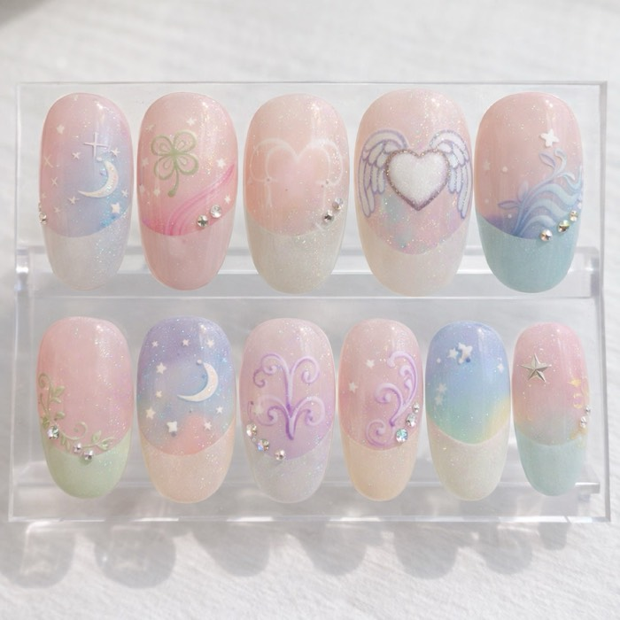
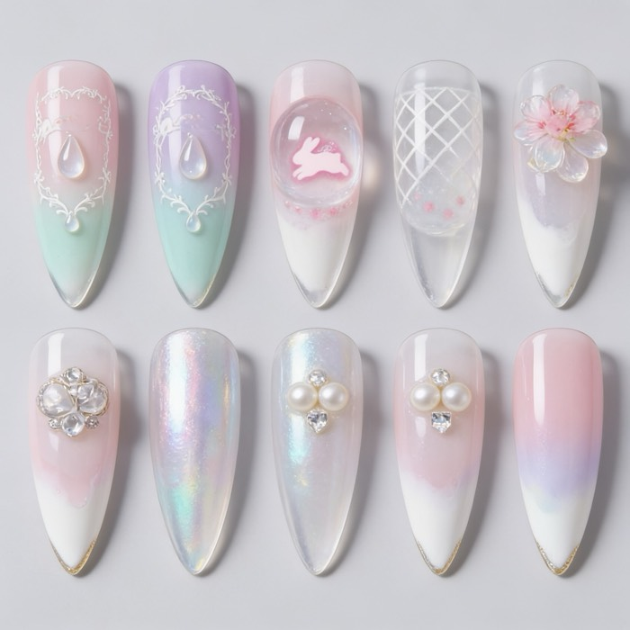
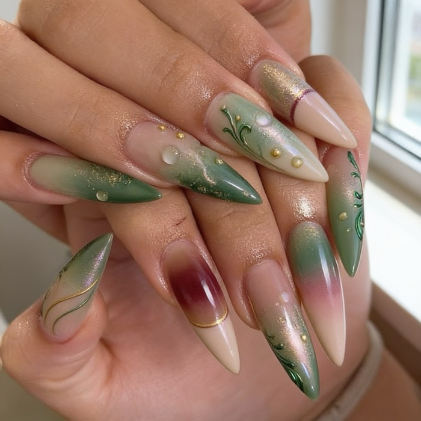
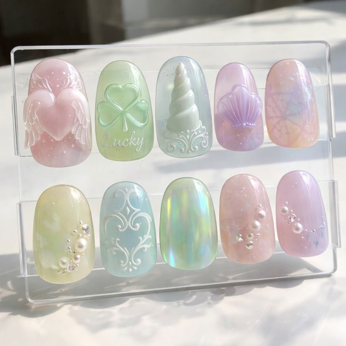
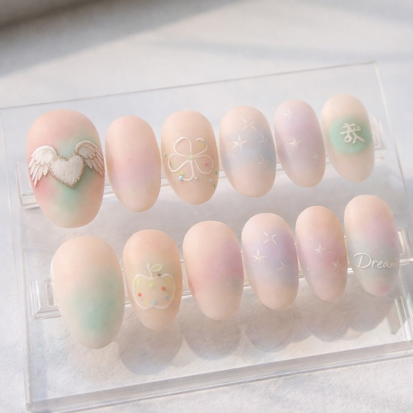

idala✳Sunmin Kim · AI Engineering Portfolio · Jul 2026 – present
One photo becomes a buildable nail set
idala is a production web service where nail salon owners upload inspiration photos —
an outfit, a tattoo flash sheet, a necklace — and receive photorealistic press-on nail
set designs that a human artist can actually craft by hand. Solo-built: product,
multi-model AI pipeline, payments, and deployment.
StatusLive on Vercel, paid product (₩9,900 / 8 runs)
The pipeline — four stages, three models
01Vision analysis
Gemini reads the photos into a structured design brief (JSON schema): palette, surface finish, motif vocabulary, and one hero motif — the single strongest pictorial element.
structured output · vision
02Composition planning
An LLM expands the brief into three 10-tip plans (balanced / bold / quiet) with an enforced hierarchy: hero on 1–2 tips, supporting tips, 2–3 rest tips.
LLM planning · deterministic fallback
03Image generation
GPT-Image renders each plan behind a provider abstraction (Gemini / Seedream / GPT-Image swappable; mock mode makes the test suite cost $0).
provider abstraction
04LLM-as-judge
A vision judge scores every render on 8 criteria — tip count, hero hierarchy, part counts, palette fidelity, physical buildability. Failures trigger one retry; the better render wins.
auto-retry · 8-point rubric
Selected output — generated end-to-end from user photos

Winged Heart FrenchHero-motif hierarchy: the heart owns exactly one tip

Glass TearsSculpted-gel translation of a jewelry reference

Olive StilettoAI try-on shot — preview before committing
409unit tests, incl. prompt snapshot guards
8-criteriavision rubric computed in code, not vibes
3 layersof quota defense (account / IP / global)
62 setspublished in the public archive (/looks)
idala✳Engineering highlights
Prompt engineering as an empirical discipline
Vocabulary control. Every noun gets drawn literally — "charm" renders a hanging pendant, "anchor" renders ⚓. The system bans trap words and validates plans against them, discarding violating sets before they cost an image.
Positive phrasing & explicit counts. Negative instructions leak; constraints are rewritten as what IS ("Exactly one tip carries… every other tip is painted gel only"). A regression-tested prompt baseline guards against drift.
Materiality → technique translation. The analyzer doesn't describe motifs, it translates their physics: a necklace becomes a draped pearl arrangement, woven fabric becomes tone-on-tone raised gel, watercolor becomes an airbrushed wash.
Hero-motif hierarchy. Uniform-density sets read as "AI-generated" to professionals. The pipeline extracts one hero motif and enforces a cast: 1–2 hero tips, supporting tips, quiet rest tips — verified by the judge.
Finish fidelity. A matte illustration reference yields a matte velvet set; a glossy jewelry reference yields glass gloss. The variant axis is composition, never a style costume that overrides the photo.
Calibrated judging. The vision model only reports observations (counts, booleans); verdicts are computed in code. Expected part counts are parsed from the brief itself, so painted-only references are never falsely penalized.
Iteration, measured — same inspiration photos, one week apart

Before — style-forcedA fixed "glass jelly" style overrode the reference's matte illustration texture.

After — photo-faithfulThe same photos now yield a matte airbrushed set carrying the reference's stamps and hand-drawn motifs.
Production engineering
Money-safe quotas. Each generation is real cost, so credits use a reserve → commit / refund protocol on Redis: failed runs never consume a customer's paid credits, and a reaper refunds reservations orphaned by platform timeouts.
Abuse defense in depth. Per-account, per-IP and global daily limits — account-only limits fall to free Google accounts; the global image cap is the hard ceiling on daily spend.
Payments without an entity. Paddle as merchant of record (KakaoPay & Korean cards), webhook + direct transaction verification so a late webhook can't lose a purchase.
Security posture. Signed blob URLs derived server-side and path-bound (verified: cross-path access returns 403); session tokens gate the generation API so the paid analyze step can't be bypassed.
Testing culture. 409 unit tests; prompts are snapshot-guarded; mock providers make the full pipeline testable at zero API cost; judge rubric changes ship with fixture-level tests.
Validation-driven product. Market re-validated three times with structured evidence docs; the current target (Korean salon owners) and pricing came from pain-signal mining, not intuition.